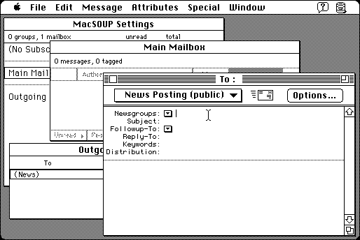

Download
MacSOUP_2.4.6.zip (1.2M) MacSOUP 2.4.6 repackaged into a zipped hfs disk image and checksum file. The disk image can be mounted with Mini vMac.
MacSOUP_2.4.6.hqx (1.7M) MacSOUP 2.4.6 in the original format.
copyright: Stefan Haller
mod date: May 1, 2000
license: shareware
official url :
MacSOUP
An “offline reader for Usenet newsgroups and Internet e-mail”. This version, not the latest, “has been tested on 7.1 and later”. Mini vMac does not yet have any way to connect to the Internet, but this program could still be used to view saved files. Requires “Internet Config”.

If you find these downloads useful, please consider helping the Gryphel Project, which hosts them.
Here are the md5 checksums for the downloads, signed with Gryphel Key 5:
--------- GRY SIGNED TEXT --------- 9d0df1ccb4c3716c754924038ba1f9de MacSOUP_2.4.6.zip 05ed4df1c77c52ec33d3d0bf1891307a MacSOUP_2.4.6.hqx ------- BEGIN GRY SIGNATURE ------- Gry/4Xa8CFcUzxdN/KSQhHeSOLh38b66WzrhlxE0nr4wXiVCpMpf89Si3+9pdBMY nAwBDaYd3y0kk/pyKgJeeDgN6Gj+HunlUe/vB3AIcnz3pKxNS7ejkdb6qKMXFn+m qOgk7D5BkJCXcTyNG4WmA717//+u6tjx5ZwKLQGqKiOfz77SbjSrumJKRVsGetw9 -------- END GRY SIGNATURE --------